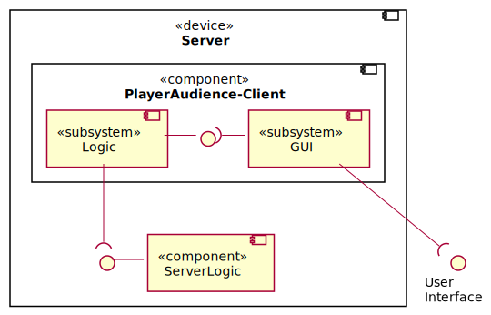

Architecture diagrams
The diagrams below show the architectural structure of the different components of QualityQuest and how they communicate via well-defined interfaces.
Class diagrams
The class diagram shows the architectural structure of the individual components of QualityQuest and thus which classes are used in the implementation to logically implement the project. It also shows which interfaces the individual components use to communicate with each other.
Since the StoryGraph is run and build locally on the Moderator-Client and the ServerLogic only has a forwarding function, a fallback is easily possible with only the moderator as decision-maker. If the ServerLogic can no longer be reached by the Moderator-Client, then this will be noticed by the lack of response to the messages of the Moderator-Client and the moderator will be informed together with the option to switch to Offline-Mode. Since the ServerLogic only transfers the voting results to the Moderator-Client, in case of a ServerLogic failure, only the functionality of online voting is lost, and the Moderator-Client can continue the game in an Offline-Session with no further drawbacks.
In Offline-Mode, the Voting-Timer is deactivated and the moderator can select StoryFlowDecisions directly, while status checks are still performed in the background to inform the moderator in case the ServerLogic becomes available again.

Server class diagrams
The software components PlayerAudience-Client and ServerLogic are located on the same physical device, which is called Server. Since a separate cookie is created for each PlayerAudience-Client when connecting to the Online-Session, the communication between PlayerAudience-Clients and ServerLogic is managed by the PlayerAudienceClientManager class, which implements the Observer-pattern. The communication between ServerLogic and Moderator-Client is realized via a WebSocket connection over HTTPS, which is established after successful authentication.

Component diagrams
The class diagrams show the architectural structure of the individual components using interfaces/ports and subsystems.
Component-Overview
An overview of all components of QualityQuest and which interfaces exist between the individual components, or the user interfaces of the participants. The physical device Server contains the software component ServerLogic as the backend, while the PlayerAudience-Client component corresponds to the frontend. Since there are several instances of the PlayerAudience-Client, the communication between front-and backend is done via the Observer-pattern. The exchange between ServerLogic and Moderator-Client is realized via a WebSocket connection.
PlayerAudience-Client
The PlayerAudience-Client component consists of a subsystem GUI, which will allow the participant to interact with the game via the user interface, using HTML and JavaScript, and the subsystem Logic, which is responsible for interpreting inputs and exchanging data with the ServerLogic.

ServerLogic
The ServerLogic component consists of a subsystem for the Message Management, which interprets the determined results, and a MainLogic subsystem. The MainLogic subsystem interacts with the PlayerAudience-Client, providing the voting options for it and evaluating the submitted votes. Connected to this is the subsystem Message Management, which prepares the received data and converts the results into a JSON for further communication.
Moderator-Client
The component Moderator-Client consists of a subsystem GUI, which, based on Unity, provides a user interface to the moderator for interacting and presenting the game. The subsystem Logic manages the progress in the StoryGraph, the influence of PlayerCharacterStatusValues on StoryFlowDecisions as well as the communication to the component ServerLogic via the WebSocket.